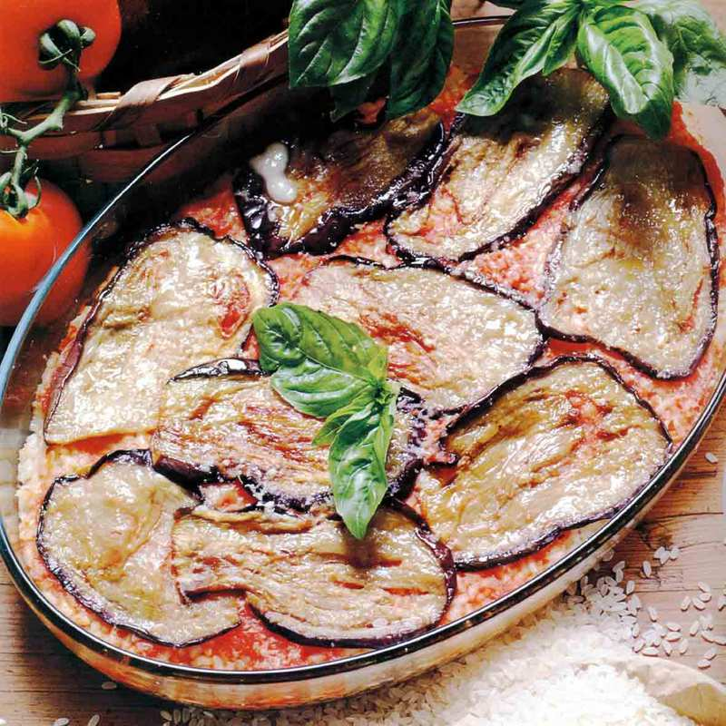

Parmigiana di melanzane

L’origine della parmigiana sembra essere siciliana, ma se ne contendono la paternità anche napoletani e parmensi vediamo come prepararla alla perfezione
Ingredienti
- 4 melanzane
- 800g salsa di pomodoro
- 500g mozzarella
- Una cipolla
- Basilico
- Farina
- Olio di arachide
- Olio e.v.o
- Zucchero
- Sale
Procedimento
- Per la ricetta classica della parmigiana di melanzane, mondate la cipolla, affettatela e soffriggetela in una casseruola con un filo di olio extravergine per 2-3’, poi unite la salsa di pomodoro, un pizzico di sale fino e di zucchero
- Aggiungete una decina di foglie di basilico spezzettate e cuocete, a fuoco lento, per circa 40’: per la riuscita della ricetta è utile che la salsa sia densa e corposa
- Sbucciate parzialmente le melanzane: la buccia è la parte che trattiene più olio ma è anche la più saporita. Spuntatele, poi tagliatele per il lungo in fette spesse 4-5 mm
- Sistemate le fette di melanzana, a strati, in uno scolapasta, salatele con il sale grosso e ponetevi sopra un peso: vanno bene anche dei piatti. Lasciatele spurgare così per 30’
- Asciugate le melanzane su carta da cucina, eliminando il sale, poi passatele nella farina e friggetele in olio di arachide caldo per 6-7’, voltandole a metà cottura
- Sgocciolate via via le melanzane su carta da cucina e tamponatele leggermente con altra carta, per eliminare l’olio in eccesso
- Spennellate con poco olio extravergine il fondo di una teglia (25x20 cm, h 6 cm) e distribuitevi le melanzane leggermente sovrapposte fra di loro, poi copritele con parte della salsa al pomodoro
- Distribuite sulla salsa 3-4 foglie di basilico spezzettate e 2-3 fette di mozzarella tagliuzzate. Proseguite fino alla fine degli ingredienti, poi infornate a 180 °C per 35-40’. Sfornate e lasciate intiepidire prima di servire